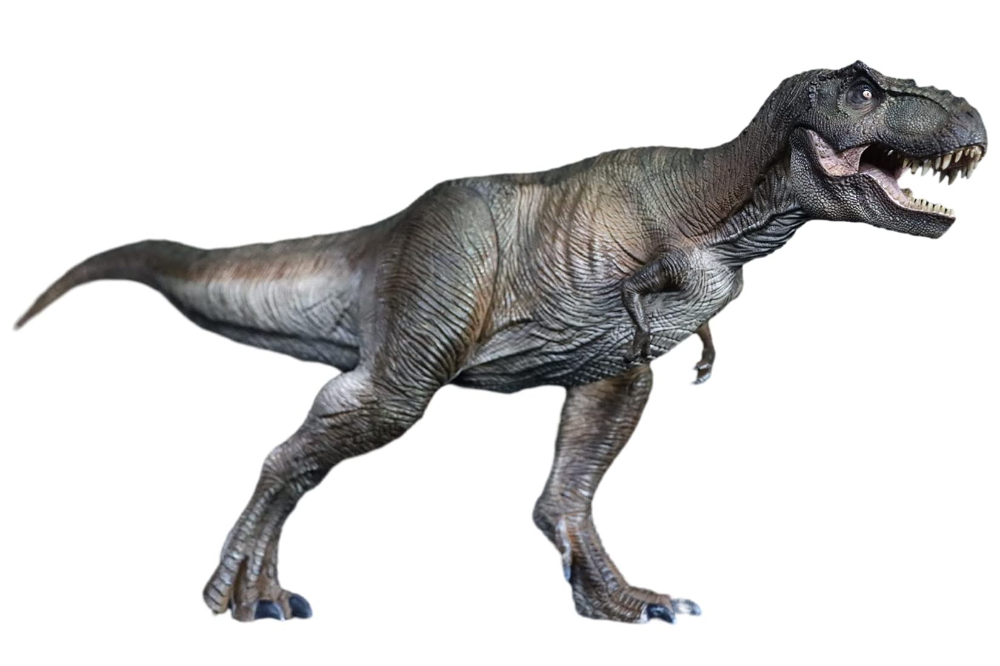
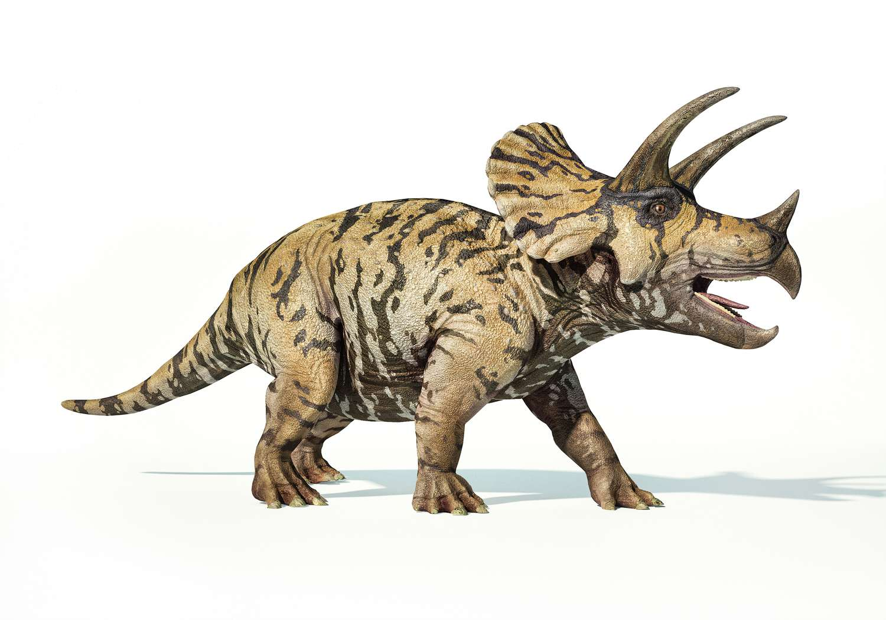
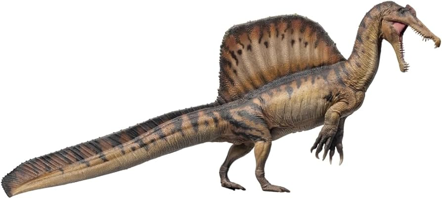
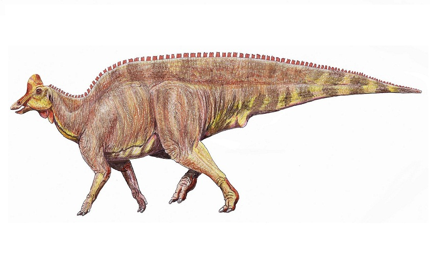
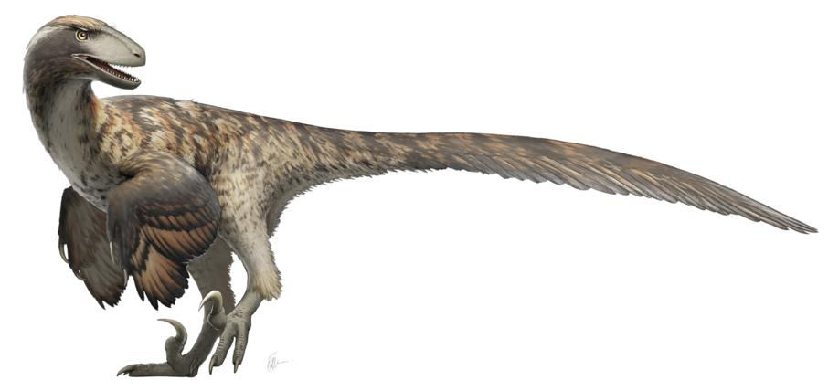

The Cretaceous Period
The Cretaceous Period, lasting from approximately 145 to 66 million years ago, is the final period of the Mesozoic Era, following the Jurassic and preceding the Paleogene. This period is widely known for its dramatic evolutionary advancements and significant geological changes. The Cretaceous marked a time of profound diversification in life forms, particularly among dinosaurs, flowering plants, and marine life. Throughout the Cretaceous, the Earth's climate remained warm, with polar regions free from ice and widespread shallow seas that fostered a rich diversity of marine life. This period also saw the further breakup of the supercontinent Pangaea into smaller continents, with Laurasia and Gondwana continuing to drift apart. As the continents shifted, ocean currents and climates changed, leading to new ecological niches and the evolution of various species.
Dinosaurs reached their zenith during the Cretaceous, with the emergence of some of the most famous and largest species to ever walk the Earth, such as Tyrannosaurus rex and Triceratops. The period also witnessed the rise of flowering plants (angiosperms), which began to dominate terrestrial ecosystems. This shift in plant life had a profound effect on herbivorous dinosaurs, which had to adapt to new types of vegetation. The Cretaceous ended with one of the most catastrophic events in Earth's history: the mass extinction event, likely caused by a massive asteroid impact and volcanic activity, which led to the extinction of the dinosaurs and many other species. This marked the end of the Mesozoic Era and paved the way for the rise of mammals in the Cenozoic Era.
Tyrannosaurus rex
Tyrannosaurus rex, often referred to as T. rex, is undoubtedly one of the most famous dinosaurs of all time and a symbol of the Cretaceous Period. This massive carnivorous theropod grew to lengths of around 40 feet and stood about 13 feet tall at the hip. T. rex had a powerful jaw filled with large, sharp teeth, capable of delivering a bone-crushing bite. Despite its small arms, which have long been a topic of discussion among paleontologists, T. rex was an apex predator, likely preying on large herbivorous dinosaurs like Triceratops and Hadrosaurus. Fossils of T. rex have been found in North America, primarily in what is now the western United States. T. rex's reign as one of the top predators of its time came to an end at the close of the Cretaceous, when the mass extinction event wiped out most of the dinosaurs.
Triceratops
Triceratops is one of the most iconic herbivorous dinosaurs from the Cretaceous, easily recognized by its large bony frill at the back of its head and its three distinct facial horns. This ceratopsid grew to about 30 feet in length and was likely a herd animal, using its horns and frill for defense against predators like T. rex. The frill of Triceratops may have also been used for social signaling or to attract mates. Fossils of Triceratops have been found primarily in North America, particularly in the western United States and Canada, where it lived during the late Cretaceous. This dinosaur's distinctive appearance and size make it one of the most well-known species from the period.
Spinosaurus
Spinosaurus is one of the most extraordinary dinosaurs to have ever lived, largely due to its unique features and the controversial nature of its lifestyle. This massive theropod grew up to 50 feet long, making it one of the largest known carnivorous dinosaurs. Spinosaurus is most notable for the large sail-like structure along its back, formed by elongated spines. While the purpose of the sail is still debated, some theories suggest it was used for display, thermoregulation, or storing fat. Fossil evidence also suggests that Spinosaurus was a semi-aquatic dinosaur, with adaptations such as a long, crocodile-like snout and conical teeth suited for catching fish. Spinosaurus lived in what is now North Africa during the mid-Cretaceous and is considered one of the most unique and specialized predators of its time.
Hadrosaurus
Hadrosaurus, often referred to as a "duck-billed dinosaur," was a large herbivorous dinosaur known for its distinctive flat, toothless beak that resembled a duck's bill. This group of dinosaurs, also called hadrosaurids, thrived during the Cretaceous Period and became some of the most abundant and successful herbivores of their time. Hadrosaurus could grow up to 40 feet in length, and many species within this group were capable of walking both on two and four legs, making them highly adaptable. Fossils of hadrosaurids, including Hadrosaurus itself, have been found primarily in North America, particularly in the western United States. These dinosaurs likely lived in herds and used their strong jaws to process large amounts of vegetation, which was essential for their survival.
Velociraptor
Velociraptor, although smaller in size compared to some of the other Cretaceous giants, was a highly intelligent and agile predator. This theropod measured about 6.5 feet long and stood about 1.6 feet tall. Despite its relatively small size, Velociraptor was a formidable hunter, with a sharp, curved claw on each foot that was likely used to grasp and hold onto prey. Velociraptor is also believed to have been social, potentially hunting in packs, which made it even more effective as a predator. Fossils of Velociraptor have been found in what is now Mongolia, and it lived during the Late Cretaceous. Its speed, agility, and hunting techniques have made it one of the most popular dinosaurs in popular culture, despite some embellishments in movies like Jurassic Park.